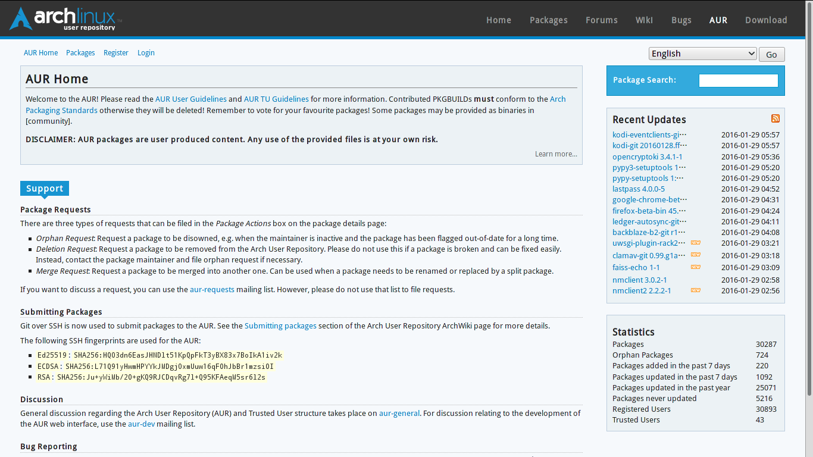
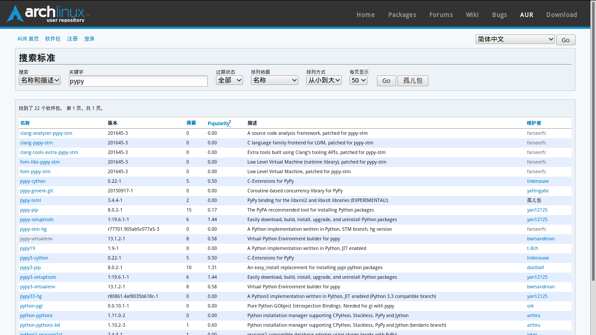
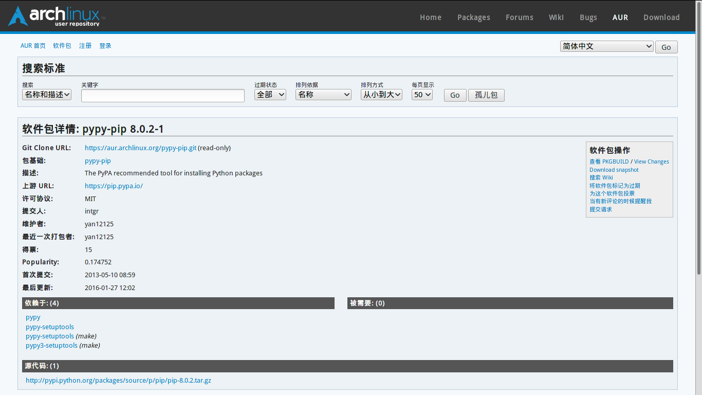

目录
AUR 纯萌新向入门教学(1)-从AUR安装软件包
2015年01月29日 (Thu) ホロ Tech 显示源代码Arch Linux AUR Guides
没玩过AUR好意思说自己是Arch Linux用户？
尽管Arch Linux官方软件仓库里的软件包够多了,连MediaWiki或者OwnCloud一类的用 最好的编程语言 PHP写的应用都有对应的软件包啦~( TU:反正闲着也没事干,打个包呗~ ), 但是汝是不是有时试图pacman的时候:
error: target not found: { 此处用汝希望安装的软件包名称替换呗~ }
这时咋办咧?就该AUR上场了呗~
什么是AUR(Arch User Repository,Arch 用户软件仓库)?
Arch用户软件仓库（Arch User Repository，AUR）是为用户而建、由用户主导的Arch软件仓库。AUR中的软件包以软件包生成脚本（PKGBUILD）的形式提供，用户自己通过makepkg生成包，再由pacman安装。创建AUR的初衷是方便用户维护和分享新软件包，并由官方定期从中挑选软件包进入community仓库。
许多官方仓库软件包都来自AUR。通过AUR，大家相互分享新的软件包生成脚本（PKGBUILD和其他相关文件）。用户还可以为软件包投票。如果一个软件包投票足够多、没有协议问题、打包质量好，那么它就很有希望被收录进官方[community]仓库（以后就可以直接通过pacman 或 abs 安装了）。
安装AUR里的软件包前要做好哪些准备咧?
其实只有一项,安装
base-devel
软件包组,内含编译软件包所需要的工具.
sudo pacman -S base-devel
对于汝个人而言,需要 会使用 终端和 看得懂bash脚本 (因为PKGBUILD其实就是bash脚本啦~,为了安全起见建议在安装时检查PKGBUILD呗~)
下面是一句没啥用处的警告:
AUR packages are user produced content. Any use of the provided files is at your own risk.
AUR中的软件包是由用户上传的,使用即表示汝愿意风险自担呗~
第一步:寻找和获得软件包的PKGBUILD文件
这里是AUR的网址呗~: https://aur.archlinux.org/ 打开后大概像这样:
可以在另一侧的"English"那里的下拉菜单里将AUR web 界面的语言修改成中文呗~
建议先 注册一个账户 , 这样便可以使用更多功能呗~
然后在搜索框里输入需要的软件包的名称就可以搜索呗~
点击对应软件包的名称就可以进入软件包的详细信息呗~
点击右侧的"Download snapshot"就可以下载到软件包的快照.(比如pypi-pip.tar.gz) 一般包含PKGBUILD,有些软件包中可能包含其它文件(例如Systemd 单元啥的) 可以用tar来解开它呗~
# 如果汝不知道tar 怎么用的话,man一下呗~ (man tar)
tar xzf pypi-pip.tar.gz
安装软件包
首先切换到软件包的目录，然后检查一下PKGBUILD：
务必认真检查所有文件！ PKGBUILD和所有.install文件都是shell脚本文件，包含若干函数，由makepkg调用并执行。 这些函数可以调用任何命令，可能包含恶意或危险代码。 makepkg将通过fakeroot（意为“假root”）执行这些命令，能在一定程度防止恶意代码损坏系统，但还是小心为好。 如有疑问，可以到论坛或邮件列表询问。
在
# 下面的三个选项分别是
# (i) 在编译完成后安装,
# (s) 安装编译时需要的依赖关系,
# (r) 在安装完成后删除只在编译时需要的软件包
# 关于makepkg的更多帮助,可以查看手册页(man makepkg)
# 或者在ArchWiki上查阅呗~
makepkg -rsi
不过经常会出现这样的状况:
==> 正在创建软件包：pypy-pip 8.0.2-1 (2016年 01月 30日 星期六 15:18:38 CST)
==> 正在检查运行时依赖关系...
==> 正在检查编译时依赖关系
==> 正在安装缺少的依赖关系...
错误：未找到目标：pypy-setuptools
错误：未找到目标：pypy3-setuptools
==> 错误： 'pacman' 无法安装缺少的依赖关系。
这表示这个软件包依赖的某些包也在AUR里,汝只好先把它们装上呗~,或者用个AUR Helper(一会儿咱会介绍一个AUR Helper)
在安装完需要的依赖以后再运行下makepkg,大概像这样~:
==> 正在创建软件包：pypy-pip 8.0.2-1 (2016年 01月 30日 星期六 15:27:02 CST)
==> 正在检查运行时依赖关系...
==> 正在检查编译时依赖关系
==> 获取源代码......
-> 正在下载 pip-8.0.2.tar.gz...
==> 正在验证源代码文件 sha256sums...
pip-8.0.2.tar.gz ... 通过
==> 正在释放源码......
-> 正在解压缩 pip-8.0.2.tar.gz，使用 bsdtar
==> 正在进入 fakeroot 环境...
==> 正在开始 package_pypy-pip()...
# 省掉编译的过程.....
==> 正在清理安装...
-> 正在清除不打算要的文件...
-> 正在删除 libtool 文件...
-> 正在移除静态库文件……
-> 正在压缩 man 及 info 文档...
-> 正在从二进制文件和库中清除不需要的系统符号...
==> 正在创建软件包"pypy-pip"......
-> 正在生成 .PKGINFO 文件...
-> 正在生成 .MTREE 文件......
-> 正在压缩软件包...
==> 正在离开 fakeroot 环境。
==> 完成创建：pypy-pip 8.0.2-1 (2016年 01月 30日 星期六 15:27:40 CST)
==> 正在安装 pypy-pip 软件包组，使用 pacman -U...
如果汝有sudo的能力的话,接下来输入密码,然后像原来一样安装软件包呗~
是不是感觉自己处理依赖关系和一遍遍的makepkg已经让汝开始挠头了么,接着往下看.
使用AUR helper简化安装过程
Arch官方永远不会提供安装AUR（和其他不受支持）软件包的便利工具，AUR用户应当对软件编译有一定了解。
然而官方不做并不代表没有😂😂,有一个叫做yaourt的工具在Archer间口口相传.yaourt就是一个AUR helper.
先用上面的方法安装好yaourt,然后像用pacman一样运行yaourt就好(除了不要以root用户运行)
yaourt -S foo
yaourt会帮汝下载PKGBUILD,安装需要的依赖,运行makepkg等一系列操作哟~
登录到AUR以后可以进行的操作
登录到AUR以后,软件包描述页面右侧的"软件包操作"的若干命令就可以使用了:
将这个包标记为过期
如果汝发现上游更新了而AUR没更新的话,可以通过这样提醒维护者更新,长时间无人维护的软件包可能被删除.
为这个软件包投票
觉得Ta好就给投一票呗~,票数多而且符合 Arch Linux 软件包规范 的软件包可能会被TU收录到官方软件仓库诶~
当有新评论的时候提醒我
评论可以用来回报软件包的问题或是改进建议等等,如果这个选项启用的话,当评论更新时汝就会收到通知呗~
提交请求
可以提交像是合并,更名或是移除软件包的请求.
诶好像有些长了呐~,所以下一次咱再说如何创建软件包并提交到AUR上呗~
 除非另有声明，约伊兹的萌狼乡手札的文字内容在
除非另有声明，约伊兹的萌狼乡手札的文字内容在